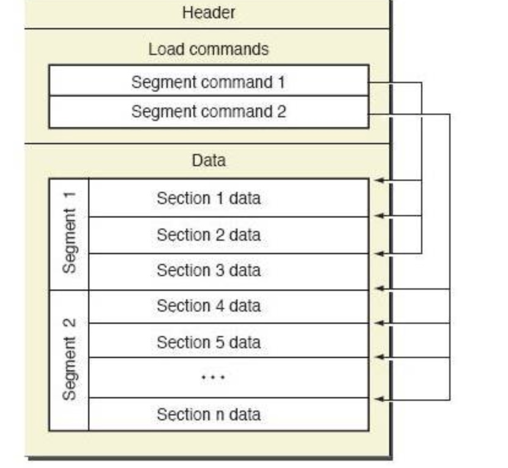
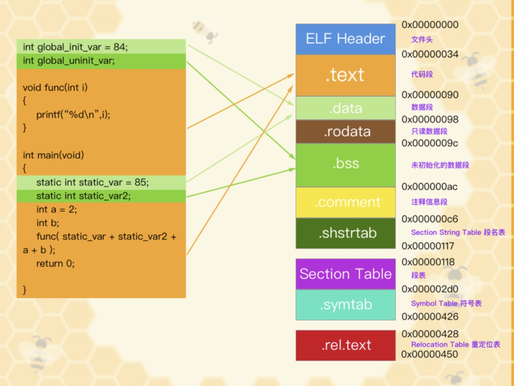

记录编译后的可执行文件、对象代码、共享库、动态加载代码和内存转储的文件格式
是二进制数据文件，里面有不同的包含元信息的数据块，比如字节顺序，cpu类型，块大小等。文件内容不可修改，因为在.app目录中有_CodeSignature目录，里面包含了程序代码的签名，这个签名的作用就是保证.app里的文件，包括资源文件，Mach-O文件都不能更改
Mach-O文件包含三个区域
Mach-O Header：包含字节顺序，magic，cpu类型，加载指令的数量等Load Commands：包含很多内容的表，包括区域的位置，符号表，动态符号表。每个加载指令包含一个元信息，比如指令类型，名称，在二进制中的位置data: 文件中最大的部分，包含了代码，数据，比如符号表、动态符号表


Mach-O 文件的解析
自己创建一个test.c文件
#include <stdio.h>
int main(int argc, char *argv[])
{
printf("hi there!\n");
return 0;
}
//将test.c 编译汇编链接成一个可执行文件 未指定输出文件 即默认为a.out
xcrun clang test.c
使用size工具查看a.out中的section
xcrun size -x -l -m a.out
Segment __PAGEZERO: 0x100000000 (vmaddr 0x0 fileoff 0)
Segment __TEXT: 0x1000 (vmaddr 0x100000000 fileoff 0)
Section __text: 0x34 (addr 0x100000f50 offset 3920)
Section __stubs: 0x6 (addr 0x100000f84 offset 3972)
Section __stub_helper: 0x1a (addr 0x100000f8c offset 3980)
Section __cstring: 0xa (addr 0x100000fa6 offset 4006)
Section __unwind_info: 0x48 (addr 0x100000fb0 offset 4016)
total 0xa6
Segment __DATA: 0x1000 (vmaddr 0x100001000 fileoff 4096)
Section __nl_symbol_ptr: 0x10 (addr 0x100001000 offset 4096)
Section __la_symbol_ptr: 0x8 (addr 0x100001010 offset 4112)
total 0x18
Segment __LINKEDIT: 0x1000 (vmaddr 0x100002000 fileoff 8192)
total 0x100003000
有4个segment和多个section
当运行时，虚拟内存会把segment映射到进程的地址空间，虚拟内存会避免将全部执行文件全部加载到内存
__PAGEZERO sement的大小是4GB，不是文件真实大小，是规定进程地址空间前4GB被映射为不可执行文件，不可读、不可写
__TEXT segment包含被执行的代码以只读和可执行的方式映射
- __text section 包含编译后的机器码
- stubs和stub_hepler是给动态链接器dyld使用，可以允许延迟链接
- __csstring 可执行文件中的字符串
- __const不可变的常量
__DATA segment以可读写和不可执行的方式映射,里面是会被更改的数据
- __nl_symbol_ptr 非延迟指针.可执行文件加载同时加载
- __la_symbol_ptr延迟符号指针.延迟用于可执行文件汇总调用未定义的函数，可执行文件里没有包含的函数会延迟加载
- __const 需要重定向的常量 例如 char * const c = “foo”; c指针指向可变的数据
- __bbs不用初始化的静态变量
- __common包含外部全局变量。例如在函数外定义 int i；
- __dyld是section占位符，用于动态链接器
查看section中的内容
xcrun otool -s __TEXT __text a.out
显示的为二进制数据，我们可以反汇编,查看汇编信息 -s __TEXT __text 有个缩写 -t
xcrun otool -v -t a.out
a.out:
(__TEXT,__text) section
_main:
0000000100000f50 pushq %rbp
0000000100000f51 movq %rsp, %rbp
0000000100000f54 subq $0x20, %rsp
0000000100000f58 leaq 0x47(%rip), %rax
0000000100000f5f movl $0x0, -0x4(%rbp)
0000000100000f66 movl %edi, -0x8(%rbp)
0000000100000f69 movq %rsi, -0x10(%rbp)
0000000100000f6d movq %rax, %rdi
0000000100000f70 movb $0x0, %al
0000000100000f72 callq 0x100000f84
0000000100000f77 xorl %ecx, %ecx
0000000100000f79 movl %eax, -0x14(%rbp)
0000000100000f7c movl %ecx, %eax
0000000100000f7e addq $0x20, %rsp
0000000100000f82 popq %rbp
0000000100000f83 retq
使用otool查看可执行文件的头部,即header
otool -v -h a.out
得到 头部信息
Mach header
magic cputype cpusubtype caps filetype ncmds sizeofcmds flags
MH_MAGIC_64 X86_64 ALL LIB64 EXECUTE 15 1200 NOUNDEFS DYLDLINK TWOLEVEL PIE
mach_header 结构体
struct mach_header {
uint32_t magic;
cpu_type_t cputype;
cpu_subtype_t cpusubtype;
uint32_t filetype;
uint32_t ncmds;
uint32_t sizeofcmds;
uint32_t flags;
};
cputype 和 cpusubtype 规定可执行文件可以在哪些目标架构运行。ncmds 和 sizeofcmds 是加载命令LoadCommand
查看LoadCommands使用命令 otool -v -l a.out
...
...
Load command 1
cmd LC_SEGMENT_64
cmdsize 472
segname __TEXT
vmaddr 0x0000000100000000
vmsize 0x0000000000001000
fileoff 0
filesize 4096
maxprot rwx
initprot r-x
nsects 5
flags (none)
Section
Section
sectname __text
segname __TEXT
addr 0x0000000100000f50 //代码的位置地址 和上面反汇编的地址是一样的
size 0x0000000000000034
offset 3920 //在文件中的偏移量
align 2^4 (16)
reloff 0
nreloc 0
type S_REGULAR
attributes PURE_INSTRUCTIONS SOME_INSTRUCTIONS
reserved1 0
reserved2 0
Section
sectname __stubs
segname __TEXT
addr 0x0000000100000f88
size 0x0000000000000006
offset 3976
align 2^1 (2)
reloff 0
nreloc 0
type S_SYMBOL_STUBS
attributes PURE_INSTRUCTIONS SOME_INSTRUCTIONS
reserved1 0 (index into indirect symbol table)
reserved2 6 (size of stubs)
...
...
加载命令的结构体
struct segment_command {
uint32_t cmd;
uint32_t cmdsize;
char segname[16];
uint32_t vmaddr;
uint32_t vmsize;
uint32_t fileoff;
uint32_t filesize;
vm_prot_t maxprot;
vm_prot_t initprot; //权限 例如r-x
uint32_t nsects;
uint32_t flags;
};
逆向Mach-O文件
需要先安装 tweak，安装越狱可以通过 cydia，不越狱直接打包成 ipa 安装包。越狱的话会安装一个 mobilesubstrate 的动态库，使用 theos 开发工具，非越狱的直接把这个库打包进 ipa 中或者直接修改汇编代码。
Mobilesubstrate 提供了三个模块来方便开发。
MobileHooker：利用 method swizzling 技术定义一些宏和函数来替换系统或者目标函数。
MobileLoader：在程序启动时将我们写的破解程序用的第三方库注入进去。怎么注入的呢，还记得先前说的 clang attribute 里的一个 attribute((constructor)) 么，它会在 main 执行之前执行，所以把我们的 hook 放在这里就可以了。
Safe mode：类似安全模式，会禁用的改动。
先前提到 Mach-O 的结构有 Header，Load commands 和 Data，Mobileloader 会通过修改二进制的 loadCommands 来先把自己注入然后再把我们写的第三方库注入进去，这样破解程序就会放在 Load commands 段里面了。
当然如果是我们自己的程序我们是知道要替换哪些方法的，既然是逆向肯定是别人的程序了，这个时候就需要去先分析下我们想替换方法是哪个，网络相关的分析可以用常用那些抓包工具，比如 Charles，WireShark 等，静态的可以通过砸壳，反汇编，classdump 头文件来分析 app 的架构，对应的常用工具dumpdecrypted，hopper disassembler 和 class_dump。运行时的分析可用工具有运行时控制台cycript，远程断点调试lldb+debugserver，logify。